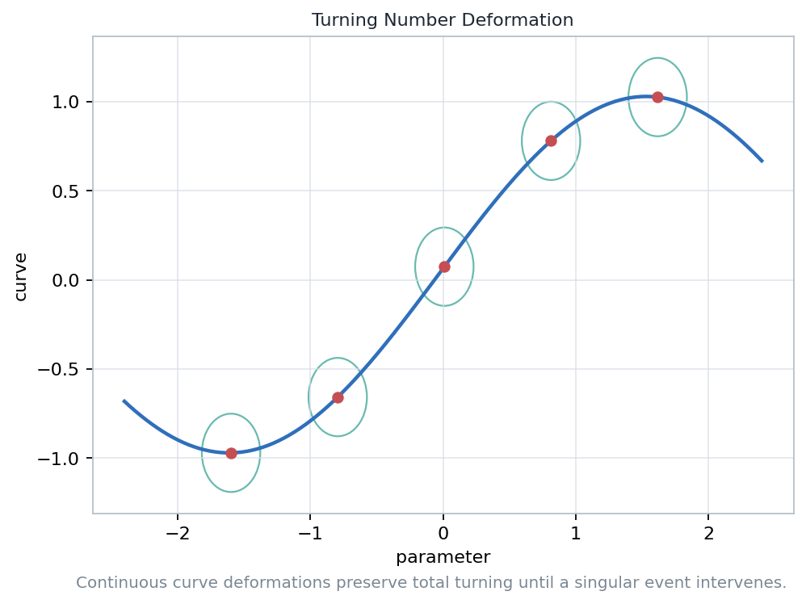
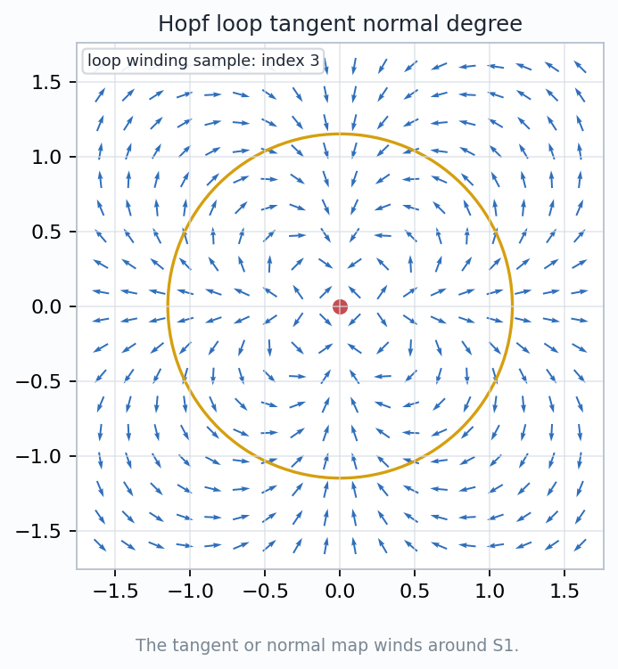
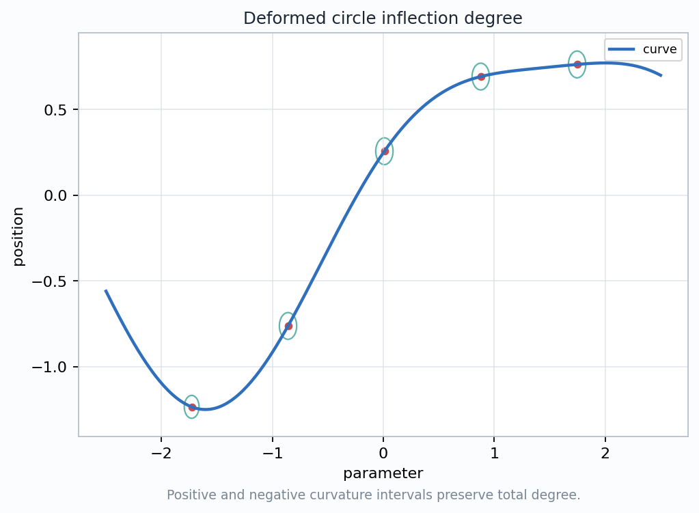

The formula says that curvature is not just local bending. Integrated around a closed curve, it records how many times the direction field turns.

The curve theorem counted how tangent directions cover \(S^1\). The surface argument asks how normal directions cover \(S^2\).
The normal directions cover the unit sphere once.
Positive and negative curvature contributions cancel.
Handles reduce the total signed curvature by \(4\pi\) each.